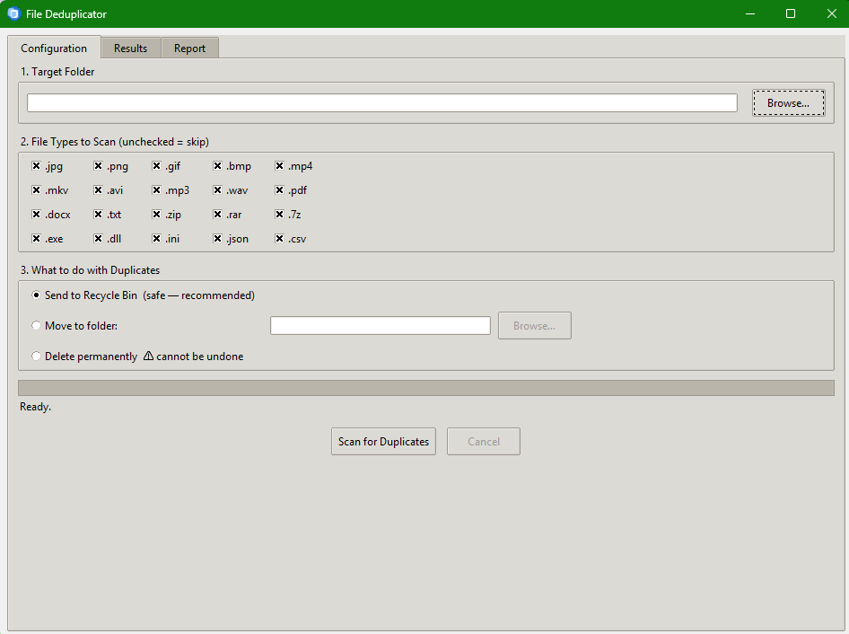

Free Windows Utility
Find and remove duplicate files using SHA-256 fingerprinting. Recover gigabytes of wasted space — safely.
Features
Compares the actual content of files, not just their names. Two files named differently but with identical contents will always be caught.
Files are grouped by size before hashing. If no two files share the same size, hashing is skipped entirely — making scans extremely fast.
Choose exactly which file types to scan: photos, videos, audio, documents, archives, executables and more — or scan everything at once.
Send duplicates to the Windows Recycle Bin, move them to a folder of your choice, or delete permanently. Your call — your data.
Results are displayed in groups. The oldest file is marked "Original" in green; copies are marked "Duplicate" in amber. You always know which is which.
Every scan produces a report showing files scanned, duplicates found, space recovered, and every action taken. Save it as a .txt file.
Scanning runs in a background thread. The app stays responsive during long scans — you can cancel at any time without force-quitting.
The source code contains no network imports. File Deduplicator cannot send your file names, paths, or any other data to anyone.
Screenshot

Download
Single-file executable — no installation wizard required. Just download and run.
⬇ Download FileDeduplicator.exeAlso available as a Setup Wizard installer • View source on GitHub
⚠ Windows SmartScreen may show a warning on first run because the executable is not yet code-signed.
Click More info → Run anyway. The source code is publicly available for your review.
System Requirements
| Component | Requirement |
|---|---|
| Operating System | Windows 10 or Windows 11 (64-bit) |
| Architecture | x64 (Intel or AMD) |
| Disk space | ~25 MB (including temp files during first run) |
| RAM | No meaningful requirement — uses <64 KB per file |
| Python | Not required — self-contained executable |
| Internet connection | Not required |
| Administrator rights | Not required |
Learn More
Read the complete step-by-step guide — covering every setting, how to read results, and tips for getting the most out of every scan.
Read the Full User Guide →FAQ